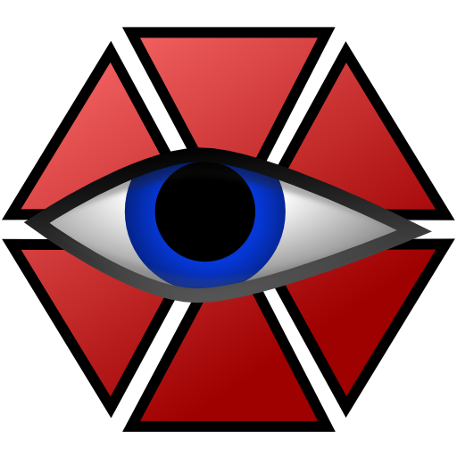

Documentazione sui sottotitoli
del video del criterio 2.4.4
Creato da Tommaso Parenti
EditorL'editor che ho utilizzato e' "Aegisub", un editor per i sottotitoli gratis. I punti di forzaIl primo punto di forza è la possibilità di scrivere i sottotitoli nel mentre che si guarda il video, infatti ti seleziona in modo "automatico" il tempo dove inserire i sottotitoli. Inoltre un secondo punto di forza è il fatto che per fare i sottotitoli tramite questo programma ci metti molto poco tempo. I punti di debolezzaL'unico punto di debolezza che ho trovato è quello di imparare ad utilizzarlo, infatti ho dovuto usare vari tutorial, ma poi, come ho precedentemente detto, è diventato molto semplice. |
 |
GitHub
Inizialmente non capivo molto bene Github, però poi dopo vari tutorial e aiuto da parte dei miei compagni ho iniziato a comprenderlo.